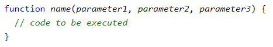

Mvc and javascript
JavaScript: Scoping
- JavaScript has function-level scope. Different from C: block-level scope (use slides from here).
- Demo
function test(){ var a = 1+1; return a; }
var x = 1; console.log(x); // 1 if (true) { var x = 2; console.log(x); // 2 } console.log(x); // 2
function foo() { var x = 1; if (x) { (function () { var x = 2; // some other code }()); } console.log(x); //1 }
JavaScript: Function positions
- The code inside the function will execute when “something” invokes (calls) the function:
- When an event occurs (when a user clicks a button)
- When it is invoked (called) from JavaScript code
- Automatically (self invoked, recursive)
- Bugs:
- How to define a function?
- Expression: var x = function (a, b) {return a * b}; 
- When to call a function?
- How to define a function?
-
Key: If you’re not calling anything until everything loads, you should be fine.
- Based on : https://stackoverflow.com/questions/7609276/javascript-function-order-why-does-it-matter
JavaScript: Function positions and Hoisting
1: bar(); //This won’t throw an error function bar() {}
foo(); //This will throw an error var foo = function() {}
2: bar(); function bar() { foo(); //This will throw an error } var foo = function() {}
3: bar(); function bar() { foo(); //This won’t throw an error } function foo() {}
4: function bar() { foo(); //This won’t throw an error } var foo = function() {} bar();
- Hoisting is JavaScript’s default behavior of moving declarations to the top.
- Move all variable declarations and function definition at the top, then value assignments.
1: var foo = 42;
//the interpreter turns it into this: var foo; foo = 42;
2: var foo = 42; function bar() {}
//turns into var foo; //Move to the top function bar() {} foo = 42;
3: bar(); var foo = 42; function bar() {} //=> var foo; function bar() {} bar(); foo = 42;
JavaScript: Function positions and Hoisting
1: bar(); function bar() {} //turns to function bar() {} bar();
2: var foo = function() {} foo(); //=> var foo; foo = function() {} foo();
3: bar(); function bar() { foo(); } var foo = function() {} //=> function bar() { foo(); } var foo; bar(); // foo is used before defined foo = function() {}
JavaScript: Function positions and Hoisting
3: bar(); function bar() { foo(); //This won’t throw an error } function foo() {} //=> function bar() { foo(); } function foo() {} bar();
4: function bar() { foo(); //This won’t throw an error } var foo = function() {} bar(); //=> function bar() { foo(); } var foo; foo = function() {} bar();
| Index | Prev | Next |